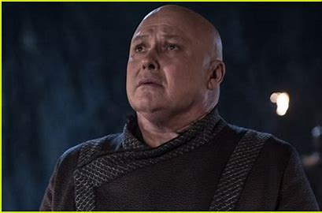

Ned Stark stood up for his daughter Arya
Arya stood in the ruin of the Red Keep after the final war

The empty Iron Throne
John and Daenerys on cliffs looked down to the battle field

The "Spider"'s final scene before being excuted by his Queen Deanerys
Sir James being questioned after went up north alone
Arya and the Hound on their way to Kingslanding: their final journey
Arya and John's farewell meeting before she moved on to new journey and he went beyond the Wall leading the Wildlings
Queen Daenerys examined her troops after nearly wipped out Kingslanding
John's first time back to Winter Fall the death of his father, mother, and big brother